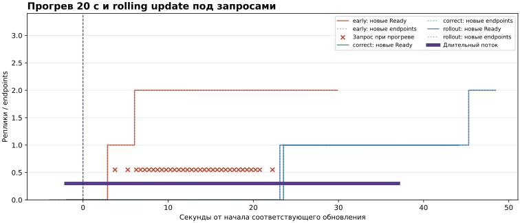
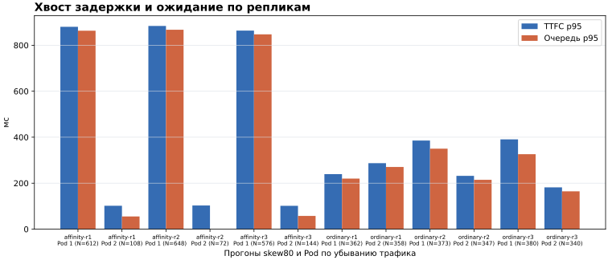
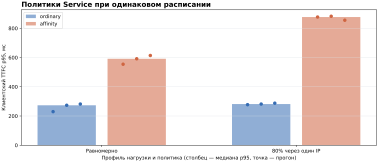
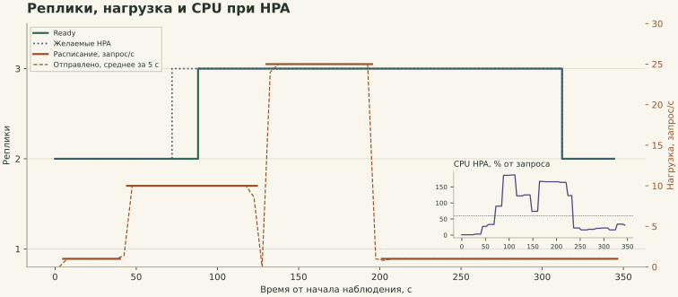

Kubernetes под нагрузкой
В работе продолжен FastAPI из ДЗ 8–10. Запросы идут через Kubernetes Service, версии A и B — проверяемые по SHA-256 артефакты. Все измерения ниже относятся к backend_mode=simulated на CPU. Содержательные части NDJSON не эквивалентны токенам модели.
Запуск и удаление · Условие · Сырые запросы · Ресурсы до запуска · Размер стенда после запуска
Стенд и идентичность версии
Helm создаёт две реплики Deployment, два Service над общим селектором и ConfigMap. В values зафиксированы образ, версия, SHA-256, прогрев, запросы и лимиты CPU/RAM. Процесс сверяет хеш файла из образа до публикации готовности, а фактические версию, хеш, Pod и request ID возвращает в HTTP и пишет в журнал. История передаётся целиком в запросе. Локальный LRU хранит только имитируемые префиксы и не служит хранилищем диалога.
Prometheus обнаруживает отдельные Pod через Kubernetes discovery. Порядок проверки процесса и нагрузочные параметры задаются в values. Дашборд Grafana показывает TTFC, полную задержку, очередь, активные запросы, статусы, CPU/RAM и Ready. Проверены два активных скрейпа, два правила promtool и восемь панелей, загруженных через API Grafana. Скрейпы · Экспорт из работающей Grafana. Используются разные пространства имён на одном узле kind. Первые попытки подготовки при 2 GiB завершились до измерения: ядро VM зафиксировало OOM. Измерительные серии запущены с 4 GiB, при тех же 6 CPU. Журнал ограничения памяти. Временные ряды ограничены четырьмя часами, 100 MB блоков и томом 160 MiB на каждый Prometheus. Образ приложения занял 172 MB, образ узла kind около 1,02 GB. При снимке в 19:16 MSK containerd занял 2,5 GiB, данные Prometheus — 36 KiB, Grafana — 2,1 MiB. Общий рост использования /var внутри VM около 3,83 GiB включает кеши и накладные расходы. Снимок размеров.
Опыт A. Прогрев, обновление и сбой
Гипотеза: проверка HTTP-процесса принимает холодную реплику. Для воспроизведения make exp-a сначала переводит Deployment из тёплого A в ранний режим с прогревом 20 с, затем повторяет тот же профиль с раздельными пробами. startup даёт время проверить артефакт и прогреться, readiness также снимает трафик при drain, liveness подтверждает жизнь процесса. Источник механизма — документация Kubernetes о probes.
Для штатного A→B клиент начинает длительный поток до Helm upgrade. maxUnavailable=0 и maxSurge=1 сохраняют рабочие реплики. preStop даёт 3 с на снятие endpoint, затем закрывает admission через loopback, Uvicorn ждёт до 35 с, Kubernetes — до 45 с. Далее намеренно неготовая B остаётся без Ready, Helm возвращает A, а ответы подтверждают фактическую версию. Принудительный выход процесса отдельно проверяет обрыв уже начатого потока. Новый Pod должен восстановить версию и хеш A, а повторная передача истории — продолжить диалог. Один узел kind не проверяет отказ узла и перенос тома с настоящими весами.
Дефектный режим: 33 запросов приняли до конца прогрева из 65. Исправленный режим: 0 из 65. Штатный rollout: 99 попыток, HTTP 5xx — 0, незавершённых — 0. При неготовой B выполнено 60 запросов, число наблюдавшихся неготовых Pod — 1.
Поток a-rollout-long-0 на hw11-a-5bc578ff88-h89dx отдал первую часть в -2.0 с от начала обновления. Первое наблюдение Terminating у этого Pod — +23.1 с. Последняя отметка клиента — +37.0 с, получено 40 частей.
Клиент аварийного запроса получил 3 частей из 32; результат aborted через 0.3 с от команды выхода. Остальной трафик: 60 успешных.
Restart замечен через 2.4 с, этот Pod снова Ready через 22.9 с.

| Фаза | План | Отправлено | Готово | Отказ | Обрыв | Тайм-аут | Не отправлено | Ошибка, % | Тайм-ауты, % | TTFC p50/p95, мс | E2E p50/p95, мс |
|---|---|---|---|---|---|---|---|---|---|---|---|
| early | 65 | 65 | 65 | 0 | 0 | 0 | 0 | 0.00 | 0.00 | 16.73 / 107.82 | 16.80 / 107.86 |
| correct | 65 | 65 | 65 | 0 | 0 | 0 | 0 | 0.00 | 0.00 | 16.50 / 18.47 | 16.57 / 18.53 |
| rollout | 90 | 90 | 90 | 0 | 0 | 0 | 0 | 0.00 | 0.00 | 16.47 / 18.03 | 16.51 / 18.08 |
| rollout-long | 1 | 1 | 1 | 0 | 0 | 0 | 0 | 0.00 | 0.00 | 106.51 / 106.51 | 39147.46 / 39147.46 |
| rollout-version | 8 | 8 | 8 | 0 | 0 | 0 | 0 | 0.00 | 0.00 | 16.44 / 16.95 | 16.48 / 16.97 |
| bad-B | 60 | 60 | 60 | 0 | 0 | 0 | 0 | 0.00 | 0.00 | 16.29 / 17.74 | 16.32 / 17.78 |
| rollback-version | 12 | 12 | 12 | 0 | 0 | 0 | 0 | 0.00 | 0.00 | 16.03 / 16.50 | 16.06 / 16.55 |
| kill-stream | 1 | 1 | 0 | 0 | 1 | 0 | 0 | 100.00 | 0.00 | — / — | — / — |
| kill-service | 60 | 60 | 60 | 0 | 0 | 0 | 0 | 0.00 | 0.00 | 16.22 / 17.66 | 16.25 / 17.70 |
| Проверка | Результат |
|---|---|
| defect_reproduced | PASS |
| corrected_never_cold | PASS |
| graceful_rollout | PASS |
| bad_b_excluded_and_rollback | PASS |
| abrupt_stream_aborted | PASS |
| replaced_same_version | PASS |
| dialogues_isolated | PASS |
Опыт B. ClientIP и горячая реплика
Гипотеза: ClientIP помогает попасть в локальный кеш, но 80% запросов от одного IP способны переполнить очередь одной реплики. В make exp-b четыре Pod подают одинаковый список запросов и одинаковые интервалы 6 запросов/с. Распределение клиентов меняется с 25/25/25/25 на 80/20, параметры запроса, его длина и расписание остаются общими для двух Service. На узле kube-proxy работает в режиме iptables, основное семейство адресов — IPv4. Соединения HTTP/1.1 закрываются после ответа, чтобы проверить Service при новом TCP-подключении. Клиентский IP и фактически увиденный приложением IP сохраняются. Алгоритм ClientIP описан в документации Kubernetes о Service.
Локальный LRU ограничен 16 записями, всего шесть префиксов. Цена hit/miss — 15/100 мс, одновременно обрабатывается один запрос на Pod, очередь держит до четырёх, каждый из пяти фрагментов задерживается на 50 мс. Перед каждым прогоном обе реплики заменяются и проходят прогрев при пустом кеше. В параллельном воспроизведении полный набор из четырёх комбинаций проходит последовательно в каждом пространстве имён, с общим Deployment для пары Service. Три блока используют отдельные Deployment и наборы клиентов, но разделяют узел. Возможное влияние проверяется по состоянию узла и задержке отправки. Сравниваются три серии по 120 с для каждой комбинации политики и профиля. Конкретная последовательность запросов и снимки Service находятся в каталоге results/b.
Проверяемое изменение — Service с sessionAffinity: None. Оно распределяет новые подключения и позволяет обоим Pod постепенно набрать повторяющиеся префиксы. Для выбора сравниваем очередь и p95 по Pod вместе с долей ошибок и распределением запросов. Если перекоса нет, трасса клиент→Pod показывает, встретились ли несколько IP у одной реплики или распределились. Под настоящей нагрузкой отдельно проверяются разнообразие и длина префиксов, KV-cache, стоимость вытеснения, batching и повторное использование соединений.
Завершены 12 из 12 серий. Серий длительностью не менее 120 с: 12.
При 80% трафика с одного IP медиана p95 TTFC составила 877.17 мс у ClientIP и 281.80 мс у обычного Service. Доля ошибок в трёх сериях составила 9.17% и 0.00% соответственно. Обычный Service дал 2124 попаданий и 36 промахов среди успешных запросов, ClientIP — 1926 и 36. Цена сброса привязки в этом опыте ограничена шестью повторяющимися ключами в кеше на 16 записей.


| Профиль | Service | Прогоны | Готово | Ошибка, % | Медиана p95, мс | Hit | Miss |
|---|---|---|---|---|---|---|---|
| skew80 | affinity | 3 | 1962 | 9.17 | 877.17 | 1926 | 36 |
| uniform | affinity | 3 | 2158 | 0.09 | 591.56 | 2122 | 36 |
| skew80 | ordinary | 3 | 2160 | 0.00 | 281.80 | 2124 | 36 |
| uniform | ordinary | 3 | 2160 | 0.00 | 273.37 | 2124 | 36 |
| Фаза | План | Отправлено | Готово | Отказ | Обрыв | Тайм-аут | Не отправлено | Ошибка, % | Тайм-ауты, % | TTFC p50/p95, мс | E2E p50/p95, мс |
|---|---|---|---|---|---|---|---|---|---|---|---|
| affinity-skew80-r1 | 720 | 720 | 654 | 66 | 0 | 0 | 0 | 9.17 | 0.00 | 707.87 / 877.17 | 911.87 / 1081.64 |
| affinity-skew80-r2 | 720 | 720 | 618 | 102 | 0 | 0 | 0 | 14.17 | 0.00 | 766.91 / 882.36 | 969.75 / 1086.64 |
| affinity-skew80-r3 | 720 | 720 | 690 | 30 | 0 | 0 | 0 | 4.17 | 0.00 | 638.18 / 855.24 | 841.39 / 1057.03 |
| affinity-uniform-r1 | 720 | 720 | 718 | 2 | 0 | 0 | 0 | 0.28 | 0.00 | 195.20 / 554.21 | 399.85 / 756.88 |
| affinity-uniform-r2 | 720 | 720 | 720 | 0 | 0 | 0 | 0 | 0.00 | 0.00 | 241.91 / 591.56 | 446.10 / 793.79 |
| affinity-uniform-r3 | 720 | 720 | 720 | 0 | 0 | 0 | 0 | 0.00 | 0.00 | 261.32 / 613.97 | 464.16 / 816.55 |
| ordinary-skew80-r1 | 720 | 720 | 720 | 0 | 0 | 0 | 0 | 0.00 | 0.00 | 68.96 / 277.56 | 271.74 / 484.26 |
| ordinary-skew80-r2 | 720 | 720 | 720 | 0 | 0 | 0 | 0 | 0.00 | 0.00 | 68.27 / 281.80 | 271.08 / 486.03 |
| ordinary-skew80-r3 | 720 | 720 | 720 | 0 | 0 | 0 | 0 | 0.00 | 0.00 | 67.41 / 287.69 | 271.34 / 491.57 |
| ordinary-uniform-r1 | 720 | 720 | 720 | 0 | 0 | 0 | 0 | 0.00 | 0.00 | 67.01 / 229.89 | 269.98 / 433.13 |
| ordinary-uniform-r2 | 720 | 720 | 720 | 0 | 0 | 0 | 0 | 0.00 | 0.00 | 68.98 / 273.37 | 272.12 / 475.41 |
| ordinary-uniform-r3 | 720 | 720 | 720 | 0 | 0 | 0 | 0 | 0.00 | 0.00 | 67.94 / 281.89 | 270.85 / 484.71 |
| Прогон | Pod | Попытки | Готово | Отказы | Очередь p95, мс | TTFC p95, мс | Hit | Miss |
|---|---|---|---|---|---|---|---|---|
| affinity-skew80-r1 | hw11-6c4c8df655-6c6nb | 108 | 108 | 0 | 55.10 | 101.69 | 102 | 6 |
| affinity-skew80-r1 | hw11-6c4c8df655-cch7m | 612 | 546 | 66 | 863.28 | 880.29 | 540 | 6 |
| affinity-skew80-r2 | hw11-b2-564889954f-4ql7q | 72 | 72 | 0 | 0.10 | 103.00 | 66 | 6 |
| affinity-skew80-r2 | hw11-b2-564889954f-z99jp | 648 | 546 | 102 | 867.42 | 884.04 | 540 | 6 |
| affinity-skew80-r3 | hw11-b3-866c75ddd5-5l7qp | 144 | 144 | 0 | 57.55 | 101.43 | 138 | 6 |
| affinity-skew80-r3 | hw11-b3-866c75ddd5-8m4pn | 576 | 546 | 30 | 847.30 | 863.68 | 540 | 6 |
| affinity-uniform-r1 | hw11-6c4c8df655-hxl7f | 180 | 180 | 0 | 55.47 | 102.64 | 174 | 6 |
| affinity-uniform-r1 | hw11-6c4c8df655-vhfgd | 540 | 538 | 2 | 569.89 | 585.91 | 532 | 6 |
| affinity-uniform-r2 | hw11-b2-564889954f-65fwj | 540 | 540 | 0 | 595.82 | 612.45 | 534 | 6 |
| affinity-uniform-r2 | hw11-b2-564889954f-srbgt | 180 | 180 | 0 | 56.53 | 106.80 | 174 | 6 |
| affinity-uniform-r3 | hw11-b3-866c75ddd5-gvtvq | 540 | 540 | 0 | 611.86 | 628.70 | 534 | 6 |
| affinity-uniform-r3 | hw11-b3-866c75ddd5-pc5m9 | 180 | 180 | 0 | 61.53 | 110.62 | 174 | 6 |
| ordinary-skew80-r1 | hw11-6c4c8df655-stb98 | 358 | 358 | 0 | 270.53 | 287.00 | 352 | 6 |
| ordinary-skew80-r1 | hw11-6c4c8df655-wbrr7 | 362 | 362 | 0 | 219.96 | 239.20 | 356 | 6 |
| ordinary-skew80-r2 | hw11-b2-564889954f-7bvk5 | 373 | 373 | 0 | 350.14 | 385.44 | 367 | 6 |
| ordinary-skew80-r2 | hw11-b2-564889954f-nwbx4 | 347 | 347 | 0 | 214.51 | 231.77 | 341 | 6 |
| ordinary-skew80-r3 | hw11-b3-866c75ddd5-tm8p9 | 340 | 340 | 0 | 164.57 | 181.75 | 334 | 6 |
| ordinary-skew80-r3 | hw11-b3-866c75ddd5-whwlp | 380 | 380 | 0 | 326.14 | 390.45 | 374 | 6 |
| ordinary-uniform-r1 | hw11-6c4c8df655-7xfkk | 349 | 349 | 0 | 162.88 | 180.58 | 343 | 6 |
| ordinary-uniform-r1 | hw11-6c4c8df655-mjvtq | 371 | 371 | 0 | 218.87 | 245.31 | 365 | 6 |
| ordinary-uniform-r2 | hw11-b2-564889954f-kvhjl | 374 | 374 | 0 | 268.64 | 286.75 | 368 | 6 |
| ordinary-uniform-r2 | hw11-b2-564889954f-kvl27 | 346 | 346 | 0 | 205.01 | 229.55 | 340 | 6 |
| ordinary-uniform-r3 | hw11-b3-866c75ddd5-9d47t | 351 | 351 | 0 | 219.82 | 236.20 | 345 | 6 |
| ordinary-uniform-r3 | hw11-b3-866c75ddd5-wtwj2 | 369 | 369 | 0 | 280.18 | 297.71 | 363 | 6 |
| Прогон | Запросы по Pod | Макс. доля, % | Отставание клиента p95, мс | Очередь при свободном соседе, отсчёты по 100 мс | IP источников |
|---|---|---|---|---|---|
| affinity-skew80-r1 | 108 / 612 | 85.00 | 5.13 | 971 | 10.244.0.25, 10.244.0.26, 10.244.0.27, 10.244.0.28 |
| affinity-skew80-r2 | 72 / 648 | 90.00 | 4.81 | 1047 | 10.244.0.17, 10.244.0.19, 10.244.0.21, 10.244.0.24 |
| affinity-skew80-r3 | 144 / 576 | 80.00 | 4.84 | 895 | 10.244.0.18, 10.244.0.20, 10.244.0.22, 10.244.0.23 |
| affinity-uniform-r1 | 180 / 540 | 75.00 | 3.69 | 686 | 10.244.0.25, 10.244.0.26, 10.244.0.27, 10.244.0.28 |
| affinity-uniform-r2 | 540 / 180 | 75.00 | 3.83 | 730 | 10.244.0.17, 10.244.0.19, 10.244.0.21, 10.244.0.24 |
| affinity-uniform-r3 | 540 / 180 | 75.00 | 3.89 | 742 | 10.244.0.18, 10.244.0.20, 10.244.0.22, 10.244.0.23 |
| ordinary-skew80-r1 | 358 / 362 | 50.28 | 5.29 | 319 | 10.244.0.25, 10.244.0.26, 10.244.0.27, 10.244.0.28 |
| ordinary-skew80-r2 | 373 / 347 | 51.81 | 5.03 | 316 | 10.244.0.17, 10.244.0.19, 10.244.0.21, 10.244.0.24 |
| ordinary-skew80-r3 | 340 / 380 | 52.78 | 5.70 | 301 | 10.244.0.18, 10.244.0.20, 10.244.0.22, 10.244.0.23 |
| ordinary-uniform-r1 | 349 / 371 | 51.53 | 4.04 | 264 | 10.244.0.25, 10.244.0.26, 10.244.0.27, 10.244.0.28 |
| ordinary-uniform-r2 | 374 / 346 | 51.94 | 3.69 | 326 | 10.244.0.17, 10.244.0.19, 10.244.0.21, 10.244.0.24 |
| ordinary-uniform-r3 | 351 / 369 | 51.25 | 4.17 | 338 | 10.244.0.18, 10.244.0.20, 10.244.0.22, 10.244.0.23 |
Опыт C. Масштабирование и алерты
Гипотеза: вычислительная нагрузка поднимает среднее использование CPU выше 60% от requests и HPA создаёт третью реплику. make exp-c измеряет спокойную фазу, перекос, перегрузку и восстановление. HPA autoscaling/v2 ограничен 2–3 репликами и удерживает высокий расчёт 90 с при снижении. Metrics Server отдаёт metrics.k8s.io; запросы CPU контейнеров указаны в шаблоне Deployment. Параметры и алгоритм описаны в документации HPA.
Вычисление имитируется около 110 мс CPU-времени на запрос; фазы поступления составляют 1, 10, 25 и 1 запрос/с. Один горячий Pod при втором почти пустом может не поднять среднее до порога. При новом Pod уже запомненные ClientIP продолжают приходить на прежние endpoints, пока те доступны и записи привязки действуют. Рост числа Ready измеряется отдельно от результата маршрутизации.
Алерты: p95 TTFC выше 350 мс и доля rejected|aborted выше 10%. Окно 30 с, минимум 10 наблюдений, условие должно выполняться 15 с. Результат фиксируется как состояния Prometheus с временными метками. Точная скорость обнаружения зависит от интервала scrape/evaluation 5 с.

Снижение: 111.0 с от начала спокойной фазы до желаемых двух реплик, включая ожидание актуальных CPU-метрик.
hot-scale-up: hw11-c-7976675586-h7hgl — 680, hw11-c-7976675586-jkcc5 — 120 попыток с известным Pod.
overload-alerts: hw11-c-7976675586-h7hgl — 1381, hw11-c-7976675586-jkcc5 — 244 попыток с известным Pod.
| Фаза | План | Отправлено | Готово | Отказ | Обрыв | Тайм-аут | Не отправлено | Ошибка, % | Тайм-ауты, % | TTFC p50/p95, мс | E2E p50/p95, мс |
|---|---|---|---|---|---|---|---|---|---|---|---|
| baseline | 35 | 35 | 35 | 0 | 0 | 0 | 0 | 0.00 | 0.00 | 155.23 / 240.44 | 357.48 / 442.74 |
| hot-scale-up | 800 | 800 | 529 | 271 | 0 | 0 | 0 | 33.88 | 0.00 | 865.91 / 879.68 | 1109.41 / 1116.79 |
| overload-alerts | 1625 | 1625 | 573 | 1052 | 0 | 0 | 0 | 64.74 | 0.00 | 894.43 / 941.14 | 1134.87 / 1178.82 |
| recover-scale-down | 145 | 145 | 145 | 0 | 0 | 0 | 0 | 0.00 | 0.00 | 137.70 / 158.04 | 340.13 / 362.12 |
| Метрика | Фаза | t, с | Реплик |
|---|---|---|---|
| desired | baseline | 0.00 | 2 |
| desired | hot-scale-up | 72.05 | 3 |
| desired | recover-scale-down | 312.24 | 2 |
| ready | baseline | 0.00 | 2 |
| ready | hot-scale-up | 88.07 | 3 |
| ready | recover-scale-down | 312.24 | 2 |
| Pod | Создан (UTC) | Ready (UTC) | Прогрев и запуск, с |
|---|---|---|---|
| hw11-c-7976675586-h7hgl | 2026-11-16T16:14:27Z | 2026-11-16T16:14:41Z | 14.00 |
| hw11-c-7976675586-jkcc5 | 2026-11-16T16:14:42Z | 2026-11-16T16:14:56Z | 14.00 |
| hw11-c-7976675586-z2vbh | 2026-11-16T16:18:12Z | 2026-11-16T16:18:26Z | 14.00 |
| Алерт | Фаза | t, с | Состояние |
|---|---|---|---|
| HighTTFC | baseline | 0.00 | inactive |
| HighTTFC | hot-scale-up | 52.03 | pending |
| HighTTFC | hot-scale-up | 68.05 | firing |
| HighTTFC | recover-scale-down | 228.16 | inactive |
| HighRejectRatio | baseline | 0.00 | inactive |
| HighRejectRatio | hot-scale-up | 52.03 | pending |
| HighRejectRatio | hot-scale-up | 68.05 | firing |
| HighRejectRatio | recover-scale-down | 224.16 | inactive |
Сравнение по окну завершения и PromQL increase; дробное N отражает экстраполяцию между scrape.
| Фаза | Длительность | N клиент | p95 клиент, мс | N scrape | p95 PromQL, мс |
|---|---|---|---|---|---|
| baseline | ttfc | 35 | 240.44 | 34.81 | 285.43 |
| baseline | duration | 35 | 442.74 | 34.81 | 490.00 |
| hot-scale-up | ttfc | 524 | 879.68 | 524.80 | 983.06 |
| hot-scale-up | duration | 524 | 1116.79 | 524.80 | 1465.35 |
| overload-alerts | ttfc | 565 | 941.14 | 568.75 | 979.31 |
| overload-alerts | duration | 565 | 1178.82 | 568.75 | 1455.51 |
| recover-scale-down | ttfc | 145 | 158.04 | 145.00 | 193.14 |
| recover-scale-down | duration | 145 | 362.12 | 145.00 | 490.00 |
Как построены метрики
TTFC — разность монотонных часов клиента между фактической отправкой и получением первой содержательной NDJSON-части. Inter-chunk latency — разность соседних отметок частей. Полная задержка заканчивается после чтения потока. Завершённым считается HTTP 200 с корректным обязательным событием done и ожидаемым количеством частей. Отказ HTTP, обрыв, тайм-аут и неотправленная попытка учитываются по-разному. Каждая попытка имеет собственный request ID; генератор не повторяет запросы автоматически.
Клиентские p50/p95 вычисляются по успешно завершённым запросам (nearest rank) вместе с N. Сервер записывает Histogram только для успешных потоков; метки Pod добавляются при discovery. Для сравнения берётся одно и то же окно завершения при совпадающих правилах успеха. Промежуток между отправкой и началом серверного измерения и момент отдачи HTTP клиенту, шаг bucket и scrape объясняют разницу. Для маленькой выборки или при смене Pod полезнее смотреть на сырые timestamps и численность. Формула следует документации Prometheus о гистограммах.
histogram_quantile(0.95, sum by (le, pod) (rate(hw11_ttfc_seconds_bucket[30s]))) histogram_quantile(0.95, sum by (le) (increase(hw11_ttfc_seconds_bucket[120s]))) sum(increase(hw11_ttfc_seconds_count[120s]))
Ревью PR. Постоянная привязка диалога к Pod
Для нового запроса направил бы трафик на B: даже без префикса оценка ожидания до начала выдачи меньше примерно на 2,2 с (3,0 − 0,8), если обработка после префикса и транспорт сравнимы. Решение для маршрутизатора должно учитывать очередь в единицах ожидаемой работы, вероятность и объём cache hit, текущий лимит активных потоков, возраст метрик и p95 времени пересчёта. Измерил бы задержку до первого токена на реальном движке, полный ответ, ошибки и долю префиксных попаданий по классам запросов. При росте нагрузки выбирал бы ожидаемое время до первой части с проверкой deadline и свободной ёмкости. Если оба Pod выходят за допустимый бюджет, возвращал бы отказ с retry-after вместо необратимого роста очереди.
Восстанавливать диалог после потери A нужно из переданной клиентом или сохранённой вне Pod истории. Хешировать стоит префикс и версию runtime, чтобы локальный буфер не смешивал разные модели или арендаторов. Маршрутизатор может переназначить запрос до начала потока. Когда часть ответа уже выдана, повтор должен иметь новый идентификатор и ясный сигнал клиенту о границе обрыва, если протокол не поддерживает точное возобновление по позиции. Такие попытки не склеиваются в один успешный ответ.
В ревью использован открытый кейс Google Vertex AI. Лекция 11 не входила в предоставленные материалы, поэтому принадлежность кейса к лекции не подтверждена. В кейсе Google Vertex AI команда GKE Inference Gateway взвешивает prefix, очередь и использование KV-cache. В их собственном замере cache hit вырос с 35% до 70%; этот результат относится к их рабочей нагрузке и не переносится на локальный стенд. Подход поддерживает временную привязку при низкой очереди. Первичный материал команды Google Cloud.